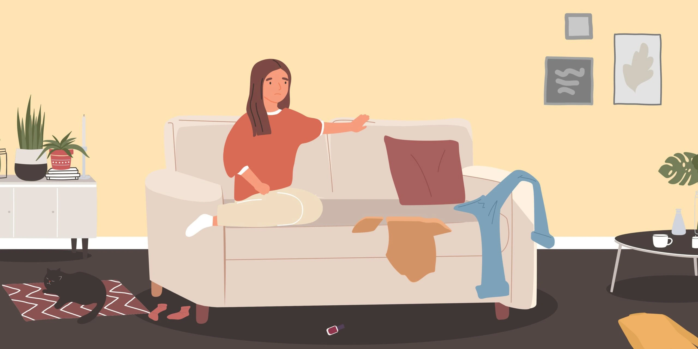
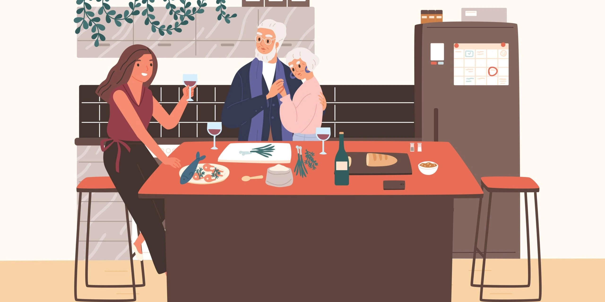

Sometimes, it may feel good to feel nothing at all. Death and funerals don’t hurt. Losing someone doesn’t hurt as it should. No amount of excitement, achievement, or happiness has you jumping around in joy. It really is as if you were made of steel. This is the life summed up of someone who is diagnosed with Apathy.

What is Apathy?
Those who have Apathy hold a general disinterest in most aspects of life. In the most basic terms, it is the lack of emotions and feelings. This includes the lack of excitement, sorrow, regret, joy, concern, etc. The severity of this condition differed from one person to another. Sure, we have all felt unmotivated and uninterested from time to time. However, Apathy can be the result of other persisting mental disorders such as depression. If untreated, the situation can be harmful.
Those who are experiencing Apathy might also know that they are not feeling as much as the others look to. However, they do not feel enough to care about it. You must feel emotions towards something on a personal level. Simply, due to not feeling, individuals with Apathy are unlikely to form a strong bond with anyone or anything. Further, anyone who is affiliated with them is unlikely to experience love or care as they should.
Quite ironically, Apathy can also be a feeling. The problem is with the kind of feeling it is. It is a feeling of indifference, with no passion, looking to detach themselves, and being unresponsive. This can be draining, leaving an Apathic person tired, lethargic and exhausted. These behavior traits make them very easily detectable among normally emotional humans.
What can cause Apathy?
What exactly causes someone to not feel or care? Causes can be twofold. It can be a side effect of other neurological disorders or caused by lifelong practices that sans individuals from feeling.
Effects of other neurological disorders
It can be a result of neurological disorders and side effects of other illnesses. If you are suffering from either one or a few of the diseases below, Apathy can be an expected problem.
- Parkinson’s Disease
- Alzheimer’s
- Dysthymia
- Dementia
- Schizophrenia
- Strokes
- Anxiety
- Depression
As mentioned below, Apathy is a normal feeling people experience from time to time. However, the alarming situation is if one experiences Apathy on a daily basis, regardless of the severity of the situation. The above situations can cause Apathy for different reasons. For example, an individual with Alzheimer’s is unable to recall things that were dear to them. Their memory shifts and resets every now and then. Thus, they don’t know anything long enough to recognize or care for them. The world is all over a new place for them, with every memory reset. When there is no memory it is hard to recognize who to care about. The same issue with Parkinson’s added to hallucinations. Parkinsons patients live out of reality way too often to know and care about what happens around them. Similarly, all the other disorders have their own way of messing with an individual’s reality.
Other lifelong practices
Check the below points and recognize any that you may have associated with yourself, which can potentially lead to your Apathic situation.
Feeling not good enough
Do you feel like you are worthless and not good enough? Condemning your worth and letting other people decide who you are can lead to a general numbness in your emotions. You may start with feeling incompetent, feeling sorry for yourself, and eventually will move on to the point of detachment and isolation. This is a result of feeling too much and experiencing a rollercoaster of emotions, eventually getting used to it and wanting all of it to go away by shutting yourself to emotions and hurt.
An unexpected life event that affects you greatly
Sometimes when a load of emotions hits you when you least expect it, the energy it takes to recover from it can have you despising feeling anything. In negative situations, this can be to avoid experience that sadness. If it was a positive situation, you may feel too happy to worry or care about anything else. However, the negative scenario is more common.
For example, having your family turned against you can lead you never to trust anyone again and the distress caused by it can make you immune to any more hurt. You may feel like the worst thing in the world has already happened to you, and nothing else can hurt you or affect you anymore. You may also have a very hard time trusting anyone, which will result in you distancing yourself from everyone that mattered to you.
A routinely life style
Life can be so routine and boring that we worry about our next meal and going home before traffic hits. We can easily miss out on the simple joys of life. Without even realizing it, we are settling down to a life we would have never accepted a few years ago. This can easily form us to be robots that only have a few daily goes in life, dealing with the same set of emotions like we are stuck in a cycle. This can tire you and overwhelm you to a point you are detached and full of indifference.
Am I Apathetic?
Maybe you are not apathetic. The confusing feelings you have may be normal. However, go through the below points to identify if you have apathy, or if you are worrying unnecessarily. Please note that the below points are examples to make you understand exactly what Apathy looks like.
- You have no more interest in things that brought you great joy. For example, you used to love to paint. However, you don’t anymore. You are no longer seeing paintings nor are you interested in grabbing a chance to paint.
- There was a time you used to look forward to late-night calls with your mother who lives in another country. Now, you try to ditch the calls or no longer want to do it.
- Lethargic.
- Events that should hurt you immensely do not affect you so badly anymore.
- Nothing can make you too happy. You manage to maintain a mild expression and feelings without an effort no matter the situation.
- You have no motivation. No task about the job, life, education is interesting anymore.
- Don’t feel like performing the simplest tasks, even while you have the energy. You convince yourself that you can not do it.
- No energy for commitments. Be it career goals, relationships, educational goals, etc. You simply just don’t care.
In other words, life passes you by and you simply sit and stare. You do not have the energy in you to motivate yourself to navigate it. Sometimes extreme pessimists find it hard to motivate themselves to face a future they are sure is going to be terrible and a failure. This pullback that may have started from the childhood lookout on life is very hard to change. Generally, such a negative attitude effortlessly pushes one to not try, not care and not feel.
How is Apathy diagnosed?
To diagnose Apathy, your doctor will ask you questions that will follow along with the below points. It will mostly be about your daily functioning in life.
- Have you experienced any lack of motivation recently?
- Can you recall a time you realized you no longer like doing something you used to enjoy very much?
- Have you been having mood swings?
- Are you experiencing lethargy?
- Run me through your day. What happens in your life on a daily basis?
- How have these changes affected your life?
In addition, your health care provider may also run tests and perform physical examinations to make sure your condition is not a side effect of another severe illness. They may also talk to your family to understand the depth of the situation if you are okay with it. According to the test results, your doctor may diagnose you with Apathy syndrome which might co-exist as a side effect of a different neurological disorder.
Treatment for Apathy
Treatment is available for Apathy. However, it is a little complicated when Apathy has resulted as a side effect of another disorder. If that is the case, medication and other advice provided to you by a healthcare provider must be followed. Otherwise, lifestyle changes can help you with eliminating Apathy.
Medications and psychotherapy
Prescribed medication by your health care provider should be taken to treat Apathy. These medications can include antidepressants, antipsychotics, and stimulants.
Psychotherapy is also recommended by doctors, which is related to Cognitive Behavioral Therapy. This is common if Apathy is a result of depression or anxiety.
How can I help myself with Apathy?
Knowing you aren’t feeling like you are supposed to cant be worse than knowing that your loved ones suffer because of that too. Also, you haven’t really lived until you love and experience emotions on your own. Here are a few ways you can practice to start living again.
Figure out the cause of the problem
Track the timeline for as far back as you can and try to recall the first few times you felt unmotivated or detached. When did you first feel like not doing something you always enjoyed very much? By doing this, you may be able to know if your apathy is caused by an event that occurred. There can be events where it impacts you more than you originally realized. Also, you might be able to link this new Apathy with other symptoms you may have been experiencing. If all of it comes together, you may be able to know that there is an underlying cause to your Apathy. In other words, understanding the cause of your Apathy, helps you work towards eliminating it better. You know what happened and you know what to do.
Push yourself off your comfort zone
Say hi to that old man who you walk past every morning. Invite a few friends over. Go for an early morning run. Workout every day for 15 mins. These are a few healthy changes you can do in your daily life to eliminate Apathy. Of course, feeling uninterested you may not want to do any of this and would rather stick to the couch and TV. However, Apathy is not a physical problem. It is in your head. Thus it is not fixable with sticking to a bunch of pills. Hard work and going over your comfort zone are necessary to find motivation and interest in life again.
Engage in things you once loved
Since you’ve been feeling Apathetic there may be so many things you gave up that you loved before. Try to re-engage with those events and people. Remind yourself why you love them and why they are important. Push yourself to be the person that enjoyed them. Remember that Apathy is a state of mind. If you want to eliminate Apathy, it is your way of thinking and behaving that has to change. In addition, one of the key signs of Apathy is losing interest in what you used to love. We believe this is one of the most important steps to take in reversing Apathy.
Be proud of your small achievements
If you gather yourself p to go to the grocery store after days of lying indoors, be proud of it. No matter what a small thing it is in another eye, you alone understand the energy it took to get yourself there. Break big tasks into smaller and many tasks and be happy for yourself every time you accomplish them. It is true that your Apathy can hurt others very much. However, they can not help you as much as you can help yourself.
Try support groups and other social activities
There are music and art therapy classes as well as support groups for those who are suffering from Apathy. Meeting up with more people who are struggling to feel or care can ironically help you care eventually.
Focus on your goals and your loved ones
In other words, understand what you should care about, so when you find not caring, you know you got to stop. Set goals for your future and have them push you when you feel like giving up. St dreams as to who you want to be. Be closer to the people that you love and love you. With time, you will find it impossible to not care about those things.
Counseling
Counselors have the training to deal with all sorts of psychological problems and apathy is just one of them. You can trust a certified clinician to get to the bottom of the issue and help you out using their expertise in the field. This may truly eliminate any waste of time and might be the most recommended cause of action, especially if you see no improvement after trying the methods above. They will use certain tactics such as treatment plans, diet plans, chore changes to give you a better feel of life.

Why is it important to deal with Apathy?
There is no blood test or tick box sheet that can be filled out to make a diagnosis of Adjustment Disorder. Instead, doctors and psychologists make a diagnosis based on answers to questions they ask. Firstly, they will inquire about childhood, life events and emotions they triggered, recent stressors and the impact it has had. Secondly, they will want to know about past mental health problems. What helped and what didn’t. Finally, they may speak to a friend or support person.
Criticisms of Adjustment Disorder diagnosis
Apathy is a problem where one can’t possibly feel, care, get attached, or anything involving emotion. Basically, it is a very lonely life. Getting apathy treated is not only a good thing for the patient but also for everyone around them. Even though the Apathetic one finds it hard to care, everyone around them cares. They care about other people, they care about themselves and everything that is significant to them. In other words, it is impossible to create a bond with someone who does not respond emotionally even when it is needed.
Thus, Apathy takes away one’s chance and right to be in committed and healthy relationships. Individuals with Apathy hurt those that care about them and important to them without having any idea. They may push people away without a clue and not know what happened or why they ended up alone. Frankly, they would not care. Apathy can make one’s life severely lonely, routine, and miserable.
Without having Apathy or its underlying issue treated, one may die a lonely death, early in life. They would not have the chance to explore the beauties of life with people or live a full life. Therefore it is important that as soon as Apathy is detected the individual themself or a loved one take them to therapy. Once Apathy becomes a lifestyle for a long time, chances of reversing are slight. Chances are a loved one will figure out the problem before the patient will. The betterment of the patient relies on how fast they reach out for help and change.